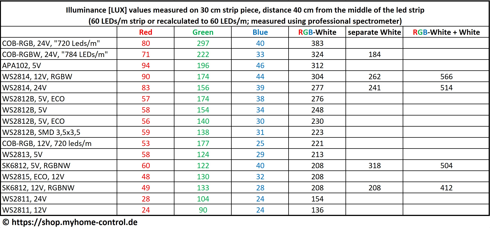

The following table shows the results of measurements of the illuminance (in lux) of different types of LEDs. The measurements were carried out on a 30 cm long LED strip section at a distance of 40 cm using a professional spectrometer. Either LED strips with 60 LEDs/m were measured or with 30 LEDs/m, although in the second case the measured values were doubled for comparability. The absolute values themselves are less relevant (a more extensive measurement of the lumina would be necessary), but they do allow the LED types to be compared with each other. When evaluating the results, it is also important to take the following into account:
- Values in different columns cannot be easily compared with each other. For example, you can see that the green color has higher values than the red, and the red color has higher values than the blue. This is because these colors are included in the calculation of the illuminance with different weighting (according to human perception).
- New LED strips were measured. With aging, the illuminance can decrease; among other things, the quality of the LEDs is important.
- LED strips from different manufacturers were measured. There can also be differences between manufacturers.
- As described above, the measured values of the LED strips with 30 LEDs/m were “scaled” to 60LEDs/m, i.e. doubled. This is a simplification.
- The statements described above mean that individual values themselves should not be viewed so closely. The table therefore only shows rough/general tendencies.
